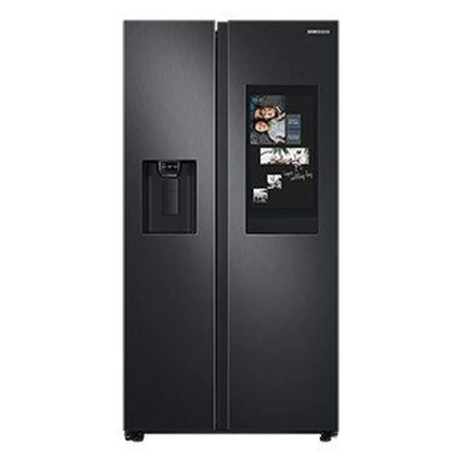

Servicio a domicilio en Colonia Miramonte
Reparamos refrigeradoras Samsung en Colonia Miramonte, el Gran San Salvador. Predominan casas y conjuntos pequeños. Confirmamos la dirección exacta y la referencia por WhatsApp antes de ir.
Fallas que más nos consultan en Colonia Miramonte
- El compresor Digital Inverter hace ruido o vibra Revisar pronto
Compresor inverter, nevera desnivelada o contacto con la pared. - El congelador no congela Urgente
Ventilador o evaporador con escarcha, sensor de temperatura, tarjeta de control o compresor. - La puerta no cierra bien o el empaque no sella Vigilar
Empaque (goma) deformado o sucio, bisagras flojas, refrigeradora mal nivelada o cajones mal puestos. - La luz interior no enciende Vigilar
Foco o LED quemado, interruptor de la puerta o conexión suelta.
Qué hacemos en la visita
- Revisamos el equipo en su lugar de uso
- Te explicamos la causa de la falla
- Confirmamos el costo antes de reparar
- Reparamos y probamos el funcionamiento
Particularidades de El Salvador para refrigeradoras
El Salvador tiene cortes y bajones de voltaje ocasionales; un protector de voltaje con retardo ayuda a cuidar el compresor y la tarjeta electrónica.
Referencias de la zona
Cómo pedir la visita
Escríbenos por WhatsApp con la marca y el modelo, qué falla presenta, tu dirección en Colonia Miramonte y una foto de la etiqueta. Te respondemos con el siguiente paso.
Preguntas frecuentes
¿Reparan refrigeradoras Samsung en Colonia Miramonte?
Sí, atendemos Colonia Miramonte y sus alrededores. Escríbenos tu dirección y coordinamos.
¿Qué falla es la más común en refrigeradoras?
Entre las que más nos consultan: el compresor Digital Inverter hace ruido o vibra, el congelador no congela y la puerta no cierra bien o el empaque no sella.
¿Dan el costo antes de reparar?
Sí. Primero diagnosticamos y te informamos el costo antes de continuar.